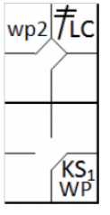
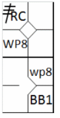
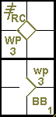
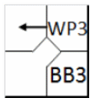
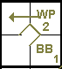
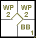

action { batter -> 2BLC }
/* On the strike, the next batter swings and reaches first base, the runner advances.*/
action { batter -> KSWP , runner2 -> wp }

A wild pitch is one so high, so low or so wide of the plate that it cannot be handled with ordinary effort by the catcher [OBR Definition of Terms].
Example 45:
The abbreviation used for a wild pitch is “WP” followed by the batting order number of the player who is on
the plate at the time of the wild pitch.
The official scorer shall charge a pitcher with a wild pitch when a legally delivered ball is
so high, so wide, or so low that the catcher does not stop and control the ball by ordinary effort, thereby permitting a
runner or runners to advance.
The official scorer shall charge a pitcher with a wild pitch when a legally delivered ball
touches the ground or home plate before reaching the catcher and is not handled by the catcher, thereby permitting a runner
or runners to advance
[OBR 9.13(a)]
| WBSC | Translation in the scoring tool | Tool |
|---|---|---|
|
 |
/* The first batter hits a triple to right field */ action { batter -> 3BRC } /* The next batter reaches first base on a 'base on ball' */ action { batter -> BB } /* The pitcher makes a wild throw, the two runners advance */ action { runner1 -> wp , runner3 -> WP } |
 |
If more than one runner advances on a wild pitch, the abbreviation “WP” (upper case) is used for the lead runner, with “wp” (lower case) for the subsequent runners.
EXCEPTION:
Example 46:
In the event that
the third strike is a wild pitch, permitting the batter to reach first base, the official scorer
shall score a strikeout and a wild pitch
[OBR 9.13(a)].
The abbreviation “WP” (upper case) along with a “K” for strikeout (followed, naturally, by the cumulative number of
the strikeout for that pitcher) should be used for the batter. The abbreviation “wp” (lower case) is used for any runners
who advance.
| WBSC | Translation in the scoring tool | Tool |
|---|---|---|
|
 |
/* The first batter hits a double to left field */ action { batter -> 2BLC } /* On the strike, the next batter swings and reaches first base, the runner advances.*/ action { batter -> KSWP , runner2 -> wp } |
|
Example 47: If a runner advances more than one base on a wild pitch, an arrow is used to indicate the continued advance.
| WBSC | Translation in the scoring tool | Tool |
|---|---|---|
|
 |
/* The batter scores first base on a 'base on ball' */ action { batter -> BB } /* The runner takes advantage of a wild pitch to gain two base */ action { runner1 -> WP+ } |
 |
Example 48: If a runner advances more than one base on more than one wild pitch to the same batter, the abbreviation “WP” is used for each wild pitch.
| WBSC | Translation in the scoring tool | Tool |
|---|---|---|

|
/* The batter scores first base on a 'base on ball' */ action { batter -> BB } /* The runner takes advantage of a wild pitch to gain two base */ action { runner1 -> WP } /* The runner takes advantage of a second wild pitch to gain a base */ action { runner2 -> WP } |
 |
The official scorer shall not charge a wild pitch […] if the defensive team makes an out before any runners advance. For example, if a pitch touches the ground and eludes the catcher with a runner on first base, but the catcher recovers the ball and throws to second base in time to retire the runner, the official scorer shall not charge the pitcher with a wild pitch. The official scorer shall credit the advancement of any other runner on the play as a fielder’s choice. [OBR 9.13 Comment]